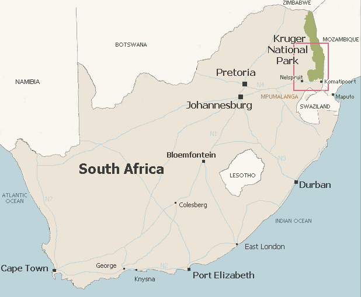

Chad with a frontier mentality, I like to push life boundaries and mastered the art of bringing a new perspective on things. No doubt my bloodline has traces of Celtic warriors, vikings and cocky smooth talkers.


Seeing a piece of land preserved from human intervention and exploitation is a gift. Growing up, living in a city and being grinded on daily makes us disconnected from our primal roots. I was one of a billion other professionals. My pretty nice perks were my golden cage. It was time to press pause.
City life leaves us with many unanswered questions and there is a sense of uneasiness when trying to grasp the quasi infinite complexity of the world we leave in. This article is about sharing with ROK readers the intellectual journey of a corporate professional seeking a meaning. It’s not a mid-life crisis, it’s a clarity one.
The urban grind, Joberg (Johannesburg, Gauteng, SA)
I believe it takes relentless commitment, intellect, and energy to understand and discover beneath all that camouflage the real intent of people and the cynical nature of our society. Because our brain is lazy and we will seek the most convincing pitch.
People who claim high morals, publicly show gratitude and generosity are lauded. In fact all they do is to exploit a behavioral hack to gain social status. This is also the case for deceptive altruists. On the other hand, in nature, there is none of that, at least not in the way it exists in an urban environment. In nature, we see camouflage for what it is, deceit.

Kruger Park is a South African natural park located north east of Johannesburg. In shape and area it is similar to Portugal. The land is relatively flat, the soil is rock hard but when scuffed by vehicle wheels it becomes a choking red dust. There are no fences between the park and the surrounding cultivated land other than natural frontiers like rivers or mountains.
The grassy landscapes and the mixed communities of trees, shrubs, and grasses can be subject to occasional wildfire. Several camps comprising of tents and bungalows are scattered across the park and there are gas stations within one hour drive from one another.
The cars are part of the landscape
Surprisingly, the game isn’t scared of cars and probably sees it as moving rocks. It is almost as it we were invisible. Getting out of the vehicle is prohibited and driving on the road is limited to 50 km/h. The game grew accustomed to cars and we are not perceived as a danger.
Impalas chilling by a pond while the elephant is taking a mud bath
The most frequent game that can be seen is the impala, a slender antelope similar to a gazelle in build. The male grows lyre-shaped horns while the female is hornless and smaller than the male. The enthusiastic guide explained the impalas are gregarious but the male can be territorial when it wants to hold territories where it may form harems of females.
The territories are demarcated with urine and faeces and defended against male intruders. When I wrote this, I paused for a minute only to let my mind suggest that this was akin to cockblocking.
Not much going on
It is fascinating to see zebras, impalas, wildebeests chewing grass and chilling next to one another. The impalas walk elegantly and slowly just the way a ballerina moves in a ballet. It eats the grass calmly. The impala cervical system will release adrenaline in the event of an immediate threat to temporally boost its response.
Stress in life should only be limited in time and adrenaline be released when faced with a life endangering situation as lasting stress can be devastating on someone’s psyche. It is my intuition that modern stress is a prime example of a maladaptive behavior that we inherited from our ancestors shaped by thousands years of evolution.
It is only natural that witnessing nature makes anyone question and draw parallels between our urban lifestyle and Kruger Park. After all, the urban lifestyle is just a more sophisticated version of the park where the intellect can be used to con and deceive people in order to gain a mating advantage.
Advertising, virtue signaling and marketing are just a smoke screen created to lure a lazy mind and are the ramifications and extensions of an urban environment where being a courtier offers more advantages than being a hunter.
The lion fears none
While the impalas, the wildebeests and the zebras are eating grass, something lurking in the dark throws gloom over the scene. The lion is the anti-social party pooper that preys upon the grass eaters. He is the one hiding in the Savannah ready to attack, he is the one who deceives.
Nature has a way of teaching animals and mankind in the most humble way, without being condescending or judgmental as most of us are. Its judgement is cold and heartless. Ego doesn’t exist in nature, only among humans.
I am currently reading a book by Avi Tuschman titled Our Political Nature — The Evolutionary Origins Of What Divides Us. The book explains the hidden roots of our most deeply held values and is a catalyst to understanding human nature and how passing on our genes that we share with our family and to a lesser extent with our tribe/community are ultimately at the core of our decisions.
It is understood that we live in a society that is goal oriented, multiple goals co-exist, for some it is to lead a hedonistic life or to live in accordance to the scripture and for others life is a quest to pursue riches, fame and power. But in nature there is only one ultimate reason to exist and that is to create a healthy legacy. In nature’s eye the rest is futile. So for that you can go to a sperm bank. Now that the matter has been taken care of, in our lives, it’s all about chasing fun, enjoying small pleasures, being independent, and cracking open a cold one with the boys.
Read More: 7 Reasons You Should Visit South Africa